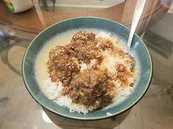

Sweet and Sour Meatballs
Originally from: Lionhouse Recipes Book
Ingredients
Meatballs
- 1 lb ground beef
- 3/4 cup rolled oats
- 2 eggs
- 1/2 cup finely chopped onion
- 1/2 cup milk
Sauce
- 1/2 cup brown sugar
- 1/4 cup vinegar
- 1 tsp yellow mustard
- 1/4 cup bbq sauce
- 1 tsp worchestershire sauce
Directions
- Combine all sauce ingredients and heat on stove.
- Combine all meatball ingredients and form into meatballs.
- Place meatballs in baking dish (I've used pyrex normally) and cover with sauce.
- Bake in 350° oven for 30 minutes.
Notes
- 2021-01-03 Made as above using sweet baby ray honey bbq sauce. Turned out fine, beef was 80-20 which left some floating grease in sauce, might be best to use leaner beef in future.
